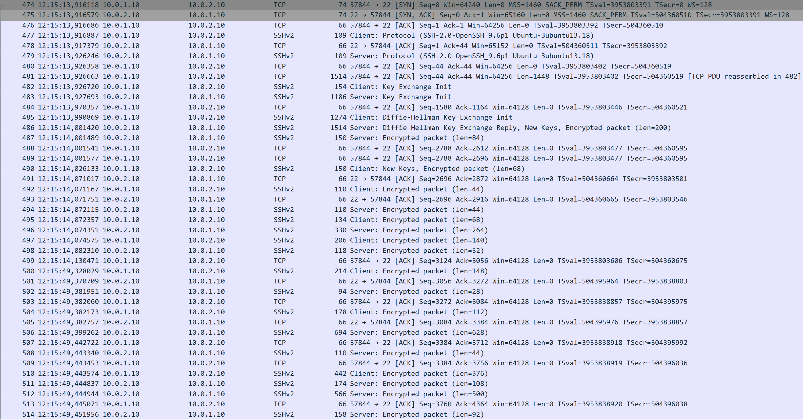
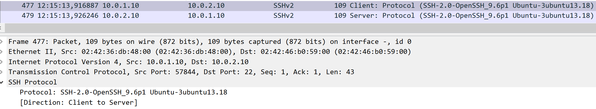
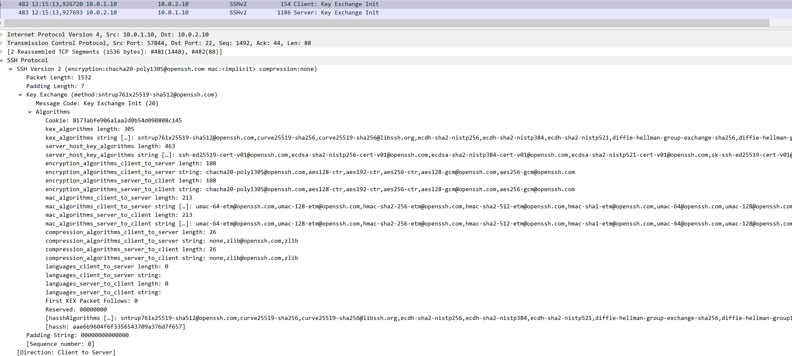
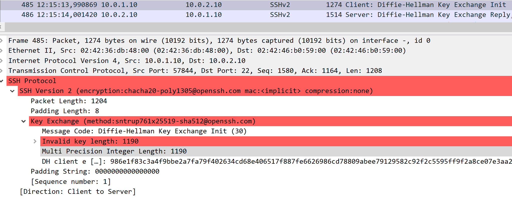
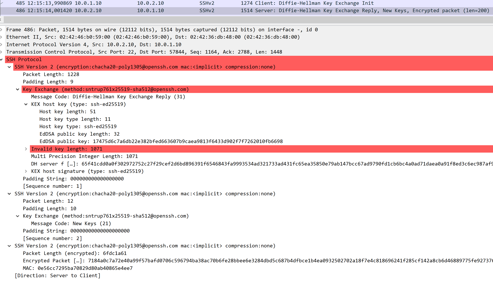
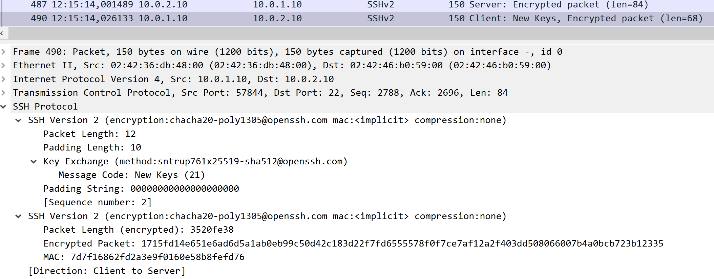
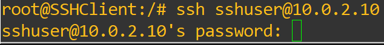
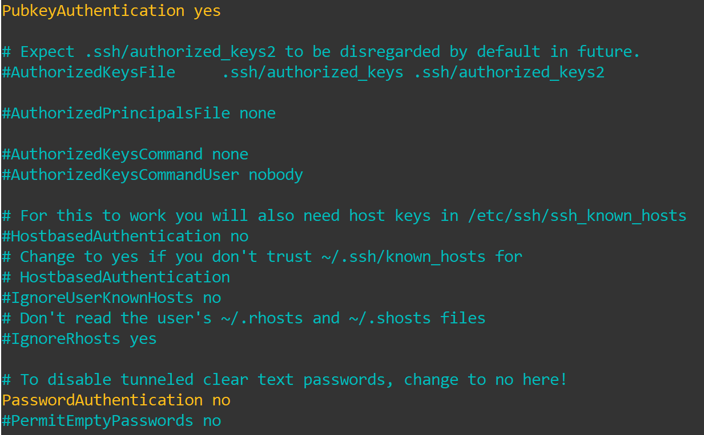
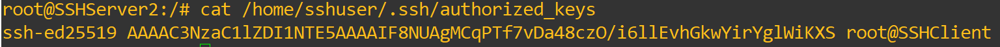
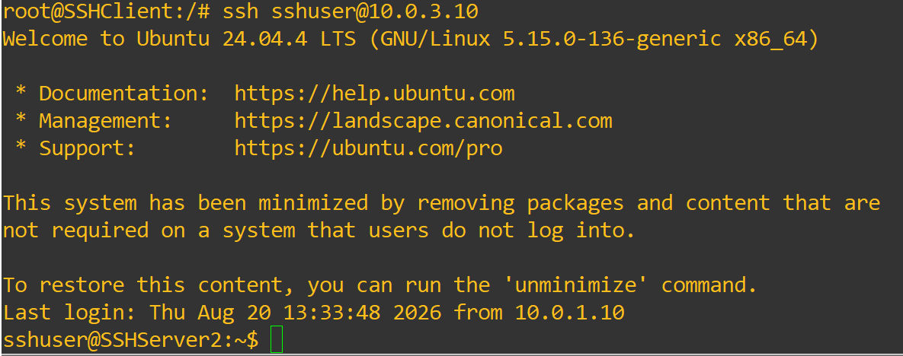

Experiments
Laboratory Experiments
We will now begin the SSH experiments, studying its handshake, the algorithms used for key exchange, host-key generation and ciphers, server host-key authentication, the differences between password and public-key authentication in configuration and practice, and how SSH handles a replay attack similar to those we tested with other protocols.
SSH Handshake and Algorithms
We will begin our experiments by studying the handshake that SSH uses to establish a secure connection between a client and a server and verifying whether it matches what we saw in the Overview.
To do this, begin by placing a Wireshark probe between SSHClient and MitM, then establish a connection between SSHClient and SSHServer1.

As we can see in Figure 1, the SSH handshake is quite extensive, as we expected from the previous example.
The first three packets are used to establish the TCP connection that SSH will use to continue the handshake.
Following those packets, we will use the ssh filter in Wireshark to reduce the clutter in the capture and see each step more clearly.

In the first two SSH messages, displayed in Figure 2, we can see that the information exchanged includes the SSH protocol version and the software identification string used by both devices. Although this is a simple step, it is important to ensure that the two devices can communicate using a compatible SSH protocol version.

Following those messages, the next two, seen in Figure 3, demonstrate the key-exchange negotiation between the server and client. Each device sends a list of supported key-exchange, encryption, compression, and message-authentication algorithms.

The next message is sent by the client, as seen in Figure 4, and contains the public value generated for the Diffie-Hellman key exchange. The server responds with the message shown in Figure 5, containing its host key, its own Diffie-Hellman public value, and a signature that authenticates the key exchange. Finally, the server indicates that it will begin using the newly negotiated keys.

The client responds with the message shown in Figure 6, indicating that it will also begin using the newly negotiated keys. From this point onward, the remaining SSH traffic is encrypted, including the user's password authentication.

With this, we have analyzed the live handshake between SSHClient and SSHServer1, and we can confirm that it followed the expected structure described in our handshake example.
We will now briefly analyze the algorithms SSH has available for its several functions, such as key exchange, encryption, compression, and message authentication, and how to select them instead of relying entirely on the default negotiation.
We will begin by analyzing the algorithms available for key exchange using the command:
This will provide us with the list of supported key-exchange algorithms, which should be similar to:
diffie-hellman-group1-sha1
diffie-hellman-group14-sha1
diffie-hellman-group14-sha256
diffie-hellman-group16-sha512
diffie-hellman-group18-sha512
diffie-hellman-group-exchange-sha1
diffie-hellman-group-exchange-sha256
ecdh-sha2-nistp256
ecdh-sha2-nistp384
ecdh-sha2-nistp521
curve25519-sha256
curve25519-sha256@libssh.org
sntrup761x25519-sha512@openssh.com
Some of these algorithms, particularly diffie-hellman-group1-sha1 and diffie-hellman-group14-sha1, are old and considered legacy. Other algorithms in the list provide more modern security characteristics.
One of the algorithms, sntrup761x25519-sha512@openssh.com, is a hybrid key-exchange algorithm that combines the classical X25519 elliptic-curve Diffie-Hellman key exchange with the post-quantum Streamlined NTRU Prime mechanism. This combination is designed to provide protection against attacks that could threaten classical key-exchange algorithms in the future.
For the next list, encryption, we will use the following command:
The list of supported algorithms is:
3des-cbc
aes128-cbc
aes192-cbc
aes256-cbc
aes128-ctr
aes192-ctr
aes256-ctr
aes128-gcm@openssh.com
aes256-gcm@openssh.com
chacha20-poly1305@openssh.com
For the following list, message authentication codes, or MACs, we will use the command:
The list of supported algorithms is:
hmac-sha1
hmac-sha1-96
hmac-sha2-256
hmac-sha2-512
hmac-md5
hmac-md5-96
umac-64@openssh.com
umac-128@openssh.com
hmac-sha1-etm@openssh.com
hmac-sha1-96-etm@openssh.com
hmac-sha2-256-etm@openssh.com
hmac-sha2-512-etm@openssh.com
hmac-md5-etm@openssh.com
hmac-md5-96-etm@openssh.com
umac-64-etm@openssh.com
umac-128-etm@openssh.com
For the final list, host-key algorithms, we will use the following command:
The list of supported algorithms is:
ssh-ed25519
ssh-ed25519-cert-v01@openssh.com
sk-ssh-ed25519@openssh.com
sk-ssh-ed25519-cert-v01@openssh.com
ecdsa-sha2-nistp256
ecdsa-sha2-nistp256-cert-v01@openssh.com
ecdsa-sha2-nistp384
ecdsa-sha2-nistp384-cert-v01@openssh.com
ecdsa-sha2-nistp521
ecdsa-sha2-nistp521-cert-v01@openssh.com
sk-ecdsa-sha2-nistp256@openssh.com
sk-ecdsa-sha2-nistp256-cert-v01@openssh.com
ssh-dss
ssh-dss-cert-v01@openssh.com
ssh-rsa
ssh-rsa-cert-v01@openssh.com
For these last three lists, we invite you to study them, learn more about the algorithms they contain, their age, the security they offer or offered before becoming obsolete, and what each of them provides to SSH.
Finally, if you want to force a certain algorithm to be used, you can use a command similar to the following:
In this case, the client is configured to use only curve25519-sha256 for key exchange. You can try different algorithms and configuration options to observe how changing the available algorithms affects the negotiation during the handshake.
Host-key Authentication
For this experiment, we will analyze the client-side verification of a server's host key. The host key is used to identify a server and helps prevent server-impersonation attacks.
We can begin by inspecting all the host-key files stored by the server with:
From this list, let's inspect the public key that the server used during its connection with our client:
With the result being:
This fingerprint identifies the server's host key. During the first connection, the client must accept the server's host key before establishing the connection. Once accepted, the key is stored by the client and can be checked during subsequent connections.
This helps protect against server-impersonation attacks. If we try to connect to a server and the host key it presents does not match the key previously stored by the client, SSH detects the mismatch and warns the user instead of silently trusting the new key.
To reset the stored host key of a server, for example to observe the first-connection process again, you can use:
Password Authentication vs Public Key Authentication
For this experiment, we will look at the different configurations required for password and public-key authentication, as well as their practical and security differences.
Starting with the configurations, we can see from what we used in the Device Configuration section that there are two distinct ways of preparing an SSH server for a user: password authentication and public-key authentication.
First, password authentication is enabled by default in the SSH server configuration used in this laboratory, so we did not have to modify the configuration.
What we did was create a user named sshuser and assign it the password ssh1234.
This way, when the user connects to the server, the server requests the user's password, which is checked against the credentials stored on the server.

While straightforward to implement and use, this method means that an attacker who obtains the password can potentially log in to the server and perform actions allowed to that account.
Our second method, despite requiring some additional preparation, is more secure in this context because the client attempting to log in must possess the corresponding private key. Without the appropriate key, authentication will fail.
To configure this method, we began by creating the user sshuser and then modifying the SSH configuration to use public-key authentication instead of password authentication.

With this done, we then generated a key pair for the client to use and copied the public key into the server's authorized_keys file.
ssh-keygen -t ed25519
cat ~/.ssh/id_ed25519.pub
mkdir -p /home/sshuser/.ssh
nano /home/sshuser/.ssh/authorized_keys

With all of this configured, when logging in to SSHServer2, we are immediately authenticated and logged in to the server because our key pair is used for authentication.

Despite the additional steps required to configure it, this method offers a more streamlined and generally more secure login experience. For an attacker to log in using this method, they would need to compromise the account or server configuration, add their own key, or obtain the client's private key. Protecting the private key is therefore essential.
Replay Attack
For our final experiment, we will subject SSH to our now well-known replay attack to see whether the protocol is vulnerable to this type of attack.
To do this, prepare the MitM device to listen for traffic with:
With the recording ongoing, go to the client and connect to SSHServer1. Then, write some text on the console to generate traffic.
Now that we have captured some packets, let's replay them toward SSHServer1 and see whether there is any response or sign that the attack is working:
Although we sent a replayed handshake and several captured packets to the server, there was no response from SSHServer1, as we can see on SSHClient. The original session remains intact, and the replayed messages from MitM do not produce a corresponding response from the server.
SSH provides replay protection through several mechanisms. TCP uses sequence numbers to detect duplicate segments and manage out-of-order delivery. At the SSH protocol level, each packet also has an implicit sequence number that is incorporated into its integrity protection, allowing SSH to detect packets that are not valid for the expected sequence.
From these experiments, we hope that your knowledge of SSH has improved, giving you a better understanding of what happens during its handshake, how its layers perform different functions at different levels, what algorithms it uses, how a server authenticates itself to a client and vice versa, and how SSH protects itself against attacks, including replay attacks.
We hope you enjoyed our SSH lab, and we hope to see you in the next lab regarding PKI!